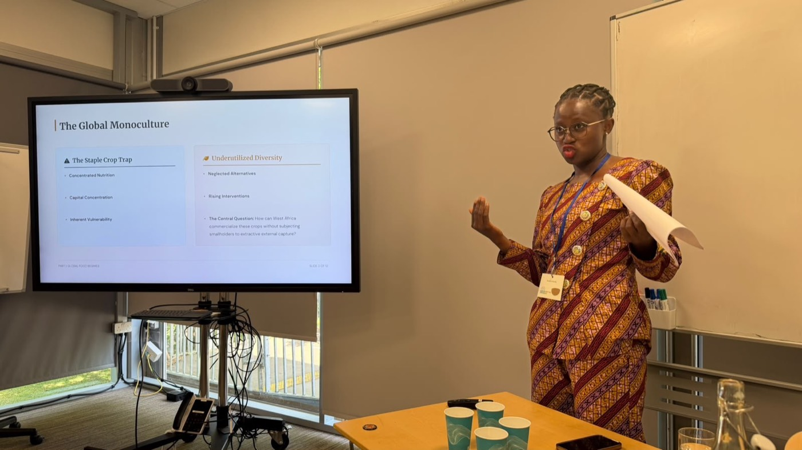

Speaking & Engagements
Conferences, talks, and workshops — past and upcoming.
Open to speaking engagements and consulting work at the intersection of food systems, climate adaptation, and capital — get in touch.

Food Systems & Climate Adaptation Researcher · PhD Student, UC Berkeley
Conferences, talks, and workshops — past and upcoming.
Open to speaking engagements and consulting work at the intersection of food systems, climate adaptation, and capital — get in touch.
